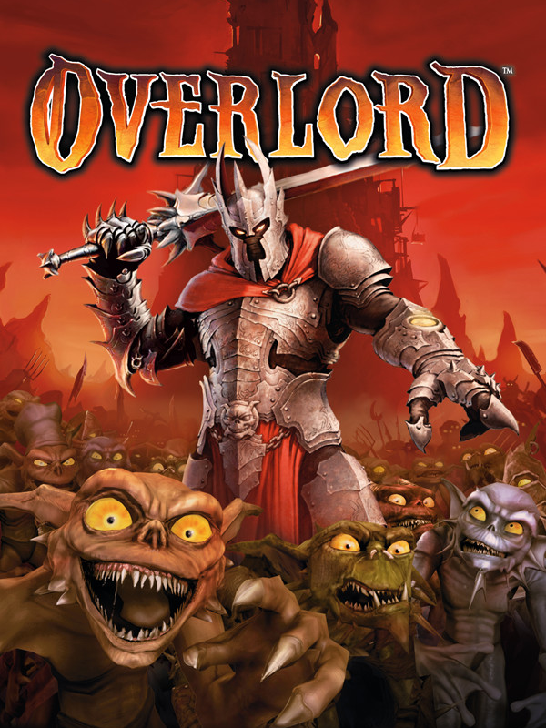

 |
|
| Tiempo de juego | No Jugado |
| Última actividad | Nunca |
| Añadido | 17/11/2025 18:09:53 |
| Modificado | 17/11/2025 18:11:57 |
| Estado de finalización | Not Played |
| Librería | Playnite |
| Fuente | |
| Plataforma | PC (Windows) |
| Fecha de lanzamiento | 26/6/2007 |
| Puntuación de la Comunidad | 78 |
| Puntuación de la Crítica | 70 |
| Puntuación de usuario | |
| Género | Adventure Hack and slash/Beat 'em up Role-playing (RPG) Strategy |
| Desarrollador | 4J Studios Triumph Studios |
| Editor | Codemasters |
| Característica | Multiplayer Single Player |
| Enlaces | Steam |
| Tag | |
¿Harto de ser el héroe bueno que salva al mundo? "Overlord" te da la oportunidad que siempre quisiste: ser el malo. Ponete la armadura de un Señor Oscuro, sentate en tu trono y preparate para reconquistar un mundo de fantasía de las garras de unos "héroes" corruptos y bastante patéticos. Es una parodia brillante y oscura del fantasy épico.
La genialidad del juego es que tu verdadero poder no reside en tu espada, sino en tu ejército de esbirros: los Minions. Estos bichos leales, caóticos y estúpidos son tus manos, tus garras y tu carne de cañón. Los dirigís en hordas para que masacren enemigos, resuelvan puzzles y roben todo lo que brille. Es una mezcla perfecta de acción y estrategia, como un Pikmin del mal.
Tu misión es simple: recuperar tus dominios y reconstruir tu Torre Oscura. Para eso, vas a tener que aterrorizar pueblitos, corromper la tierra y aplastar uno por uno a los héroes ladrones que te usurparon el trono, mientras tomás decisiones que definen qué tan tirano o qué tan... pragmático querés ser.
El juego desborda humor negro y sátira británica. Te vas a cagar de risa viendo a tus Minions emborracharse en una taberna, ponerse sombreros ridículos después de una masacre o adorarte con un fanatismo idiota. No es maldad por ser malo, es maldad por ser divertido.
"Overlord" es una bocanada de aire fresco y corrupto en el género de la fantasía. Brilla por su originalidad, su humor negro y una mecánica de juego tan única como adictiva, invitándote a explorar el lado oscuro de la forma más entretenida y caótica posible.